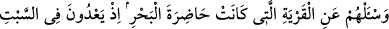

EYLE HALKININ
CUMARTESİ GÜNÜ YASAĞINI
ÇİĞNEMELERİ
163. Onlara, deniz kıyısında bulunan şehir halkının durumunu sor. Hani onlar
cumartesi gününe saygısızlık gösterip haddi aşıyorlardı. Çünkü cumartesi tatili
yaptıkları gün, balıkları meydana çıkarak akın akın onlara gelirdi, cumartesi tatili
yapmadıkları gün de gelmezlerdi. İşte böylece biz, yoldan çıkmalarından dolayı
onları imtihan ediyorduk.
164. İçlerinden bir topluluk: “Allah’ın helâk edeceği yahut şiddetli bir şekilde
azap edeceği bir kavme ne diye öğüt veriyorsunuz?” dedi. (Öğüt verenler) dediler
ki: Rabbinize mazeret beyan edelim diye, bir de sakınırlar ümidiyle (öğüt
veriyoruz).
165. Onlar kendilerine yapılan uyarıları unutunca, biz de kötülükten menedenleri
kurtardık, zulmedenleri de yapmakta oldukları kötülüklerden ötürü şiddetli bir
azap ile yakaladık.
166. Kibirlenip de kendilerine yasak edilen şeylerden vazgeçmeyince onlara:
Aşağılık maymunlar olun! dedik.
“Onlara, deniz kıyısında bulunan” denize yakın ve denize nazır “kentin” Tûr ile
Medyen arasında bulunan Eyle kentinin “durumunu sor.” Burada kendilerinden
sorulması istenen kimseler, Rasûlullah (s.a.v.) döneminde yaşayan yahudilerdir.
Buradaki sorudan maksad, soranın bilemediği bir şeyi öğrenmeye çalışması değildir.
Çünkü Rasûlullah (s.a.v.), bu kıssayı, Allah tarafından vahiy yoluyla önceden
öğrenmişti. Bilakis maksad, Rasûlullah (s.a.v.)’in onları, eskiden beri nankör
olduklarını, Allah’ın koyduğu sınırları tecavüz ettiklerini ve seleflerinden gördükleri